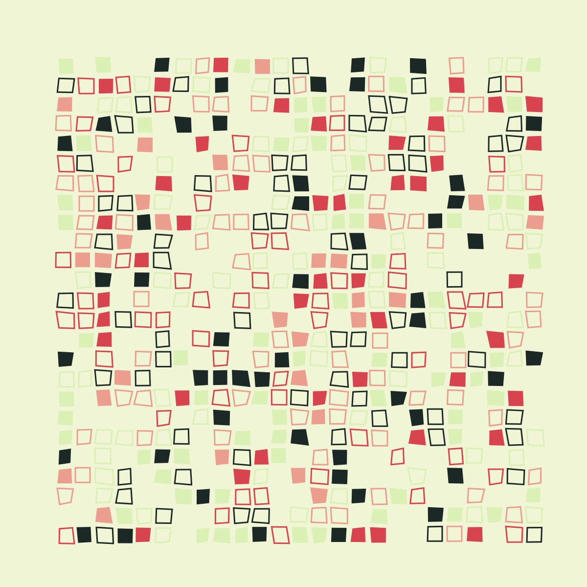
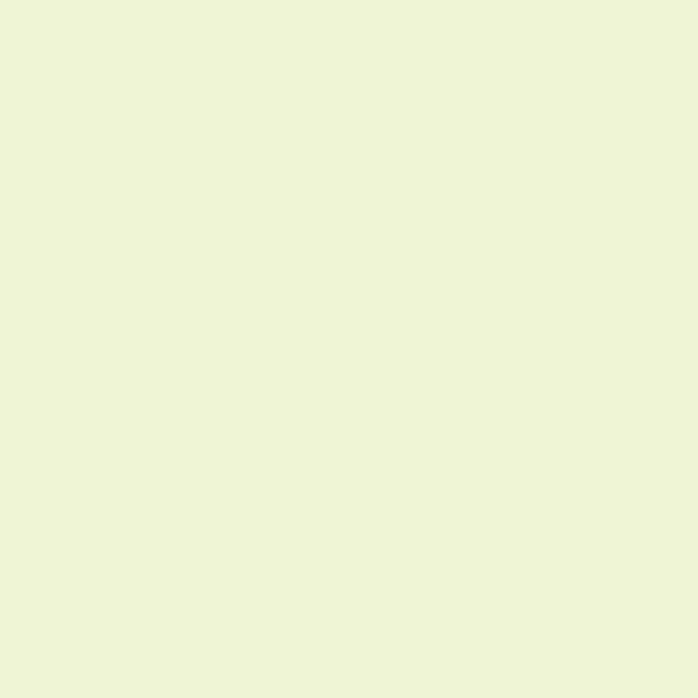
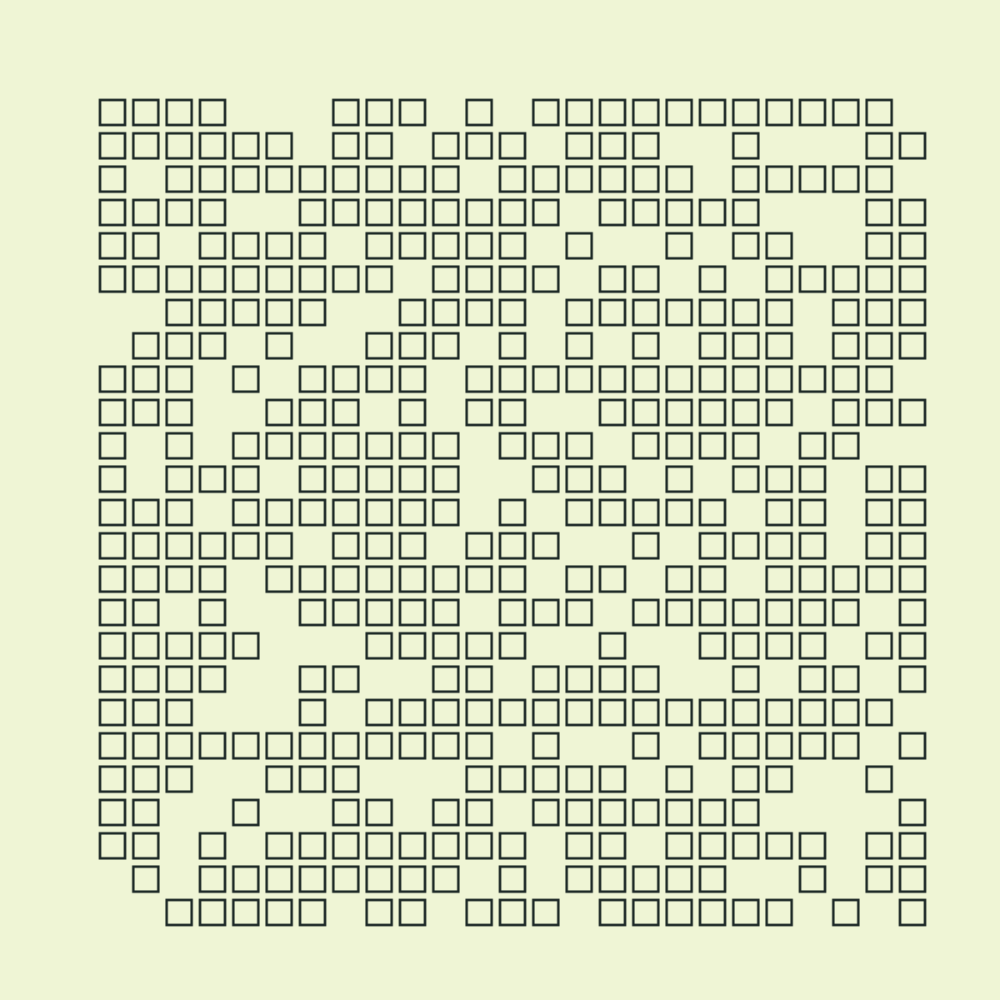
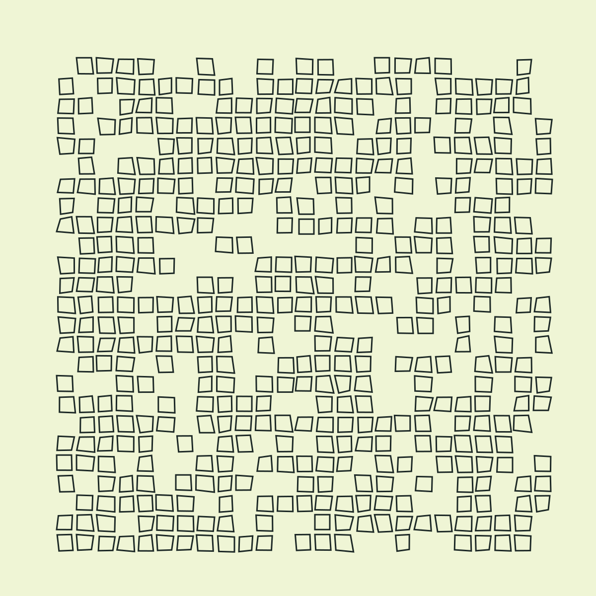

I’ve been creating generative art consistently for about six months now. People are starting to ask what my stack looks like, and until now I haven’t had anything to point at; I’d like to change that today! I’m going to lay out my approach in this blog post, and we’ll put together something simple using the stack I’ve been using to generate art.
The long and short of it:
Here’s what we’ll be making:

I’m assuming some familiarity with Haskell in this post. I’m happy to help others learn, but won’t cover some of the minutiae here - my contact information is totally open if you’d like to reach out!
You’ll need the following Haskell packages to run this script, if you want to follow along:
You’ll also need cairo (the C library) installed on your system.
Cairo is a 2D graphics library written in C. It’s pretty low-level, and handles things like drawing lines, rectangles or circles on a digital canvas. The specifics aren’t super important here, but it’s good to know what a surface and a source are.
For our purposes, we can consider a surface to be something like a canvas - a drawing surface. A source is a medium - the “digital paint” we use on the surface. In our case, this will only ever be a flat color. It can technically be a gradient, a texture, or even another surface.
First off, I’ve been writing Haskell code for a long time. I’m very familiar with it, so it was very natural for me to try out this workflow. My choice to go in this direction is largely rooted in familiarity. I followed Tyler Hobbs’s lead for a little while, writing Processing code through Quil in Clojure. It worked really well for a while, and I learned a lot of fundamentals regarding generative art (and Lisp!) this way. However, there were some things I just never got quite working, and I didn’t feel like I was as productive as I could be. So, I gave this new stack a shot.
Pretty immediately, I saw some improvements:
I switched my genart stack to haskell/cairo a few days ago. Here's what changed:
— Benjamin Kovach (@BendotK) February 15, 2018
- Deterministic random generation (seeding works across many libs)
- Image generation is super fast
- Image scaling is much easier
- Moving stuff around is slower, but usually correct
For context, I never got seeding working in my old stack. In Haskell, pretty much every library involving randomness works with StdGen (which is part of the standard library, and has a nice API). Scaling images is just a matter of applying a scaling matrix to the whole image (we’ll see this later); it was a pretty manual process before. Changing code around is a bazillion times easier because I don’t really have to worry about messing my data types up - typically the compiler will yell until it becomes satisfied, at which point running the code does what I’d expect*.
* Not always, of course. But the adage of “if it compiles it works” does have some merit, especially in the world of generative art, where happy accidents are totally welcome.
I know that these things are totally possible with my old tech stack, I just didn’t find it intuitive for some reason. These things frustrated me to the point where I wanted to try something new.
Okay, first we’ll import all the libraries we need and set some GHC extensions:
{-# LANGUAGE RecordWildCards #-}
{-# LANGUAGE TypeApplications #-}
module Main where
import Control.Arrow
import Control.Concurrent
import Control.Monad.Random
import Control.Monad.Reader
import Data.Colour.RGBSpace
import Data.Colour.RGBSpace.HSV
import Data.Foldable (for_)
import Data.List (nub)
import Data.Semigroup ((<>))
import Data.Time.Clock.POSIX
import Graphics.Rendering.Cairo
import Linear.V2
import Linear.Vector
import qualified Numeric.Noise.Perlin as P
import Text.PrintfNow we can talk about our domain.
data World = World
{ worldWidth :: Int
, worldHeight :: Int
, worldSeed :: Int
, worldScale :: Double
}
type Generate a = RandT StdGen (ReaderT World Render) aThe World type just holds all of the information we may want to access at any point in our program.
An expression of type Generate a wraps three distinct types of functionality in the following layers. Working from the inside out…
Render is a type that ships with cairo - it is a newtype wrapper around ReaderT Cairo, where Cairo handles cairo context information. This isn’t super important to understand completely, but the key is that it allows us to interface with the cairo C library in a managed way.ReaderT World, which will let us read environment information from the World.RandT StdGen layer from the MonadRandom package, which allows us to generate random values from a random number generator.The result is a type that allows all of those side effects to coexist, but effectively separates randomness and rendering. We can write functions of type Render a and lift them into the Generate context when needed, effectively separating random generation logic from rendering logic.
I’ve written a short helper function because lift . lift gets annoying to type after a while and doesn’t communicate intent very well:
-- | Lift a Cairo action into a Generate action
cairo :: Render a -> Generate a
cairo = lift . liftThose are the basic building blocks that will let us interface with the libraries we need. There’s some boilerplate/setup we’ll need to run Generate expressions, so let’s get that out of the way and get something (nothing?) rendering:
renderSketch :: Generate ()
renderSketch = pure () -- no-op
main :: IO ()
main = do
seed <- round . (*1000) <$> getPOSIXTime
let
stdGen = mkStdGen seed
width = 60
height = 60
scaleAmount = 20
scaledWidth = round $ fromIntegral width * scaleAmount
scaledHeight = round $ fromIntegral height * scaleAmount
surface <- createImageSurface FormatARGB32 scaledWidth scaledHeight
-- The "world" thinks the width and height are the initial values, not scaled.
let world = World width height seed scaleAmount
void
. renderWith surface
. flip runReaderT world
. flip runRandT stdGen
$ do
cairo $ scale scaleAmount scaleAmount
renderSketch
putStrLn "Generating art..."
surfaceWriteToPNG surface
$ "images/example_sketch/"
<> show seed <> "-" <> show (round scaleAmount :: Int) <> ".png"
surfaceWriteToPNG surface "images/example_sketch/latest.png"Running this should produce two blank images, assuming the images/example_sketch/ directory exists: images/example_sketch/<seed>-20.png and images/example_sketch/latest.png.
We’ll fill out renderSketch in a minute, but for now it’s just an art generator that does absolutely nothing. The rest of this is sort of important.
First, we grab the current POSIX time in milliseconds for use as our StdGen seed. This is important because it lets us re-use the seed to re-generate the artwork if we need/want to. Some initial variables are set, like the width, height, and how much we want to scale the final image. We create an image surface in ARGB32 format to write to, and initialize our World. The next blob runs the renderSketch action with the program’s parameters we just set up. Before rendering the sketch, we can scale by a specified amount (in this case 20), which will effectively “blow up” the image without losing any quality if needed. The next two bits just write out the file to two locations: A timestamped one, which gives us the “seed” value, and a special file called latest.png that just holds the last image generated.
Just a couple of things about this:
scaleAmount, it makes sense to generate art at a comfortable size for speed purposes.latest.png file is super useful because it allows us to update a static file when the program is run. When I’m working on artwork, I automatically rebuild and regenerate these files on save. Having latest.png around means I can just leave my image viewer open and it will automatically refresh so I don’t have to jump around the file system.width x height, but the actual size of the generated image will be scaled. This is really useful because it allows us to think in terms of a statically sized image, even when we might want to start blowing things up. I typically work with a 100x100 workspace, then blow up images as big as 10000x10000 when needed. Almost everything scales using Doubles in the cairo API, so it’s really easy to get nice scaling properties while staying comfortable within a single coordinate space.The rest of this post will focus on filling out the renderSketch function, which will actually render something to our Surface.
Refresher time. We are trying to get here:
Generating the background would be a good start, so let’s do that.
getSize :: Num a => Generate (a, a)
getSize = do
(w, h) <- asks (worldWidth &&& worldHeight)
pure (fromIntegral w, fromIntegral h)
fillScreen :: (Double -> Render a) -> Double -> Generate ()
fillScreen color opacity = do
(w, h) <- getSize @Double
cairo $ do
rectangle 0 0 w h
color opacity *> fill
hsva :: Double -> Double -> Double -> Double -> Render ()
hsva h s v = setSourceRGBA channelRed channelGreen channelBlue
where RGB{..} = hsv h s v
eggshell :: Double -> Render ()
eggshell = hsva 71 0.13 0.96
renderSketch :: Generate ()
renderSketch = do
fillScreen eggshell 1Okay that’s a bit more code, sorry. Still have a bit to set up because cairo is a pretty low level library and we’re building from scratch.
In a nutshell:
getSize gets the dimensions of the surface from the world, and converts them to a specified numeric type.fillScreen takes a color and an alpha value (an opacity param between 0 and 1) and fills the screen with that color.hsva lets us use the HSV color space instead of RGB which is much more in-line with how we think about color. It sets the source (paint) to this color for the next drawing operation.eggshell is the color we want to fill the screen with.renderSketch now fills the screen with fully opaque eggshell.I consider Double -> Render a to be the type of a Color, which might seem weird. But I want to be able to control opacity, and don’t consider that a part of a color’s definition. However, it’s a tuneable attribute of color, so this representation works nicely.
Anyway, when we run this script, we should see a completely eggshell square:

Progress! The next step is to draw a grid of quadrilaterals. Notably, we’ll need a concrete notion of two things:
We’ll start by generating perfect squares, and then add some variance to those squares later.
Well, first we need the idea of a Point in 2d space. Fortunately the linear library comes in handy here with its V2 type. V2 Double will do (a two dimensional vector of Doubles).
For this program, a Quad (quadrilateral) is well-represented by four points in space. I’ve arbitrarily chosen them to be in counter-clockwise order, starting from the top left:
-- a---d
-- | |
-- b---c
data Quad = Quad
{ quadA :: V2 Double
, quadB :: V2 Double
, quadC :: V2 Double
, quadD :: V2 Double
} deriving (Eq, Ord)* Note: I totally draw little ascii drawings like this in my comments all the time. It helps!
A simple way to think about points on a grid is a V2 Int - that is, a vector with integral coordinates. Let’s go that route for now, and generate some Quads!
fromIntegralVector :: V2 Int -> V2 Double
fromIntegralVector (V2 x y) = V2 (fromIntegral x) (fromIntegral y)
genQuadGrid :: Generate [Quad]
genQuadGrid = do
(w, h) <- getSize @Int
vectors <- replicateM 800 $ do
v <- V2 <$> getRandomR (3, w `div` 2 - 3) <*> getRandomR (3, h `div` 2 - 3)
pure $ v ^* 2
pure . nub . flip map vectors $ \v ->
let v' = fromIntegralVector v
in Quad v' (v' ^+^ V2 0 1.5) (v' ^+^ V2 1.5 1.5) (v' ^+^ V2 1.5 0)We produce a grid of quads by:
Ints^+^ (vector addition) operator to produce Quad coordinates around the specified start point* Another way of dealing with this would be to double the scaling, and half the width and height, and just use any integer coordinates. But this works too and lets us adjust the margins a little better (with 3 padding vs 2 or 4)
Armed with this, we need to be able to render the Quads by drawing the path around them:
renderClosedPath :: [V2 Double] -> Render ()
renderClosedPath (V2 x y:vs) = do
newPath
moveTo x y
for_ vs $ \v -> let V2 x' y' = v in lineTo x' y'
closePath
renderClosedPath [] = pure ()
renderQuad :: Quad -> Render ()
renderQuad Quad{..} = renderClosedPath [quadA, quadB, quadC, quadD]Then we can render the grid:
darkGunmetal :: Double -> Render ()
darkGunmetal = hsva 170 0.30 0.16
renderSketch :: Generate ()
renderSketch = do
fillScreen eggshell 1
cairo $ setLineWidth 0.15
quads <- genQuadGrid
cairo $ for_ quads $ \quad -> do
renderQuad quad
darkGunmetal 1 *> strokeVoila:

Let’s add some variance. First, we’ll add some Perlin noise to the quad coordinates: A super easy way to get cool looking, smooth movement.
quadAddNoise :: Quad -> Generate Quad
quadAddNoise Quad{..} = do
perlinSeed <- fromIntegral <$> asks worldSeed
let
perlinOctaves = 5
perlinScale = 0.1
perlinPersistance = 0.5
perlinNoise
= P.perlin (round perlinSeed) perlinOctaves perlinScale perlinPersistance
perlin2d (V2 x y)
= P.noiseValue perlinNoise (x + perlinSeed, y + perlinSeed, perlinSeed) - 0.5
addNoise v = let noise = perlin2d v in v ^+^ V2 (noise / 5) (noise / 8)
pure $ Quad
(addNoise quadA)
(addNoise quadB)
(addNoise quadC)
(addNoise quadD)A large chunk of this is just interfacing with the hsnoise library. There are some parameters we need to provide to P.perlin that you can largely ignore. Check out Adrian’s Soapbox for a good explanation, if you wish. The key piece here is that the worldSeed is added to the x and y values here when passed into the perlinNoise function. If this was not added, we would see the same variance every time. The short way of saying this is that Perlin noise is deterministic; we can introduce variance by offsetting by our (varying) seed.
The attentive reader might recognize that the only reason we’re really in Generate here is to get access to the size of the surface. This could also have been written inside the ReaderT World layer just as well and lifted into the Generate context later.
Anyway, we generate noise at each of the four quad points, subtract 0.5 from it to allow us to move up and to the left, then add a scaled version of it to each of the four quad points.
Applying it, we get a some wiggly quadrilaterals:

We’re very nearly there, but still missing a couple of points of variance:
darkGunmetal), and we want to vary the colors.This is best illustrated with code. renderSketch becomes:
teaGreen :: Double -> Render ()
teaGreen = hsva 81 0.25 0.94
vividTangerine :: Double -> Render ()
vividTangerine = hsva 11 0.40 0.92
englishVermillion :: Double -> Render ()
englishVermillion = hsva 355 0.68 0.84
renderSketch :: Generate ()
renderSketch = do
fillScreen eggshell 1
cairo $ setLineWidth 0.15
quads <- genQuadGrid
noisyQuads <- traverse quadAddNoise quads
for_ noisyQuads $ \quad -> do
strokeOrFill <- weighted [(fill, 0.4), (stroke, 0.6)]
color <- uniform
[ teaGreen
, vividTangerine
, englishVermillion
, darkGunmetal
]
cairo $ do
renderQuad quad
color 1 *> strokeOrFillWe use two functions from MonadRandom here:
weighted grabs a value out of a list with the given weight. We will fill 40% of the time and stroke 60% of the time.uniform assigns the same weight to every value in a list and does the same thing. All four colors have an equal chance of being chosen.Rendering has been lifted with cairo into it’s own block inside the for_, instead of wrapping the whole thing, to allow for random generation within the loop.
Kablam! Art!
I used this seed to generate this final image: 1520476193207. If you’ve been following along, try fixing the seed and generating it on your own!
One thing I haven’t shown off is that you can screw around with anything inside a Render block without affecting the RNG. Try changing the colors around and running this program with a seed you’ve previously used. You’ll get the same structure and distribution of color, but different colors! You can also change things like the scaling of the Perlin noise, or even screw around with the general idea of rendering a quadrilateral, all while retaining the same randomness properties.
It’s not too hard to hook up random-fu to this little framework, which extends its capabilities with e.g. Normally distributed random variables. You can also use other random number generators, as detailed in my blog post on randomness in Haskell.
coolors, a handy website. Here’s a link to the palette we used.
A number of people have been super helpful and inspirational to me. To plug a few other generative artists doing cool stuff, check out the work of Tyler Hobbs, Anders Hoff (inconvergent), and Manoloide. Visit r/generative for even more good stuff.
Also a huge thanks to the Gtk2Hs team for the cairo bindings, wihout which all of this would not be possible.
I’ve just recently set up a bigcartel shop here, where you can view and purchase my work: bigcartel link. You can also follow me on instagram or twitter, where I’ve been posting frequent updates.
I hope this post provided a glimpse into my general artistic process. As always, I’m happy to answer any questions in the comments or on twitter!